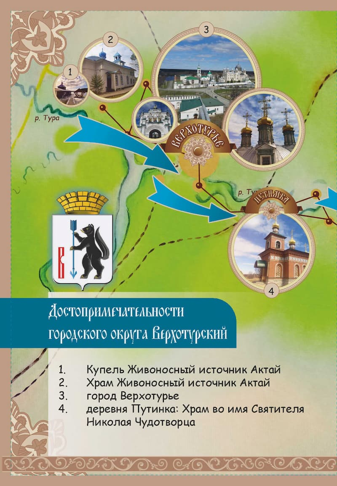
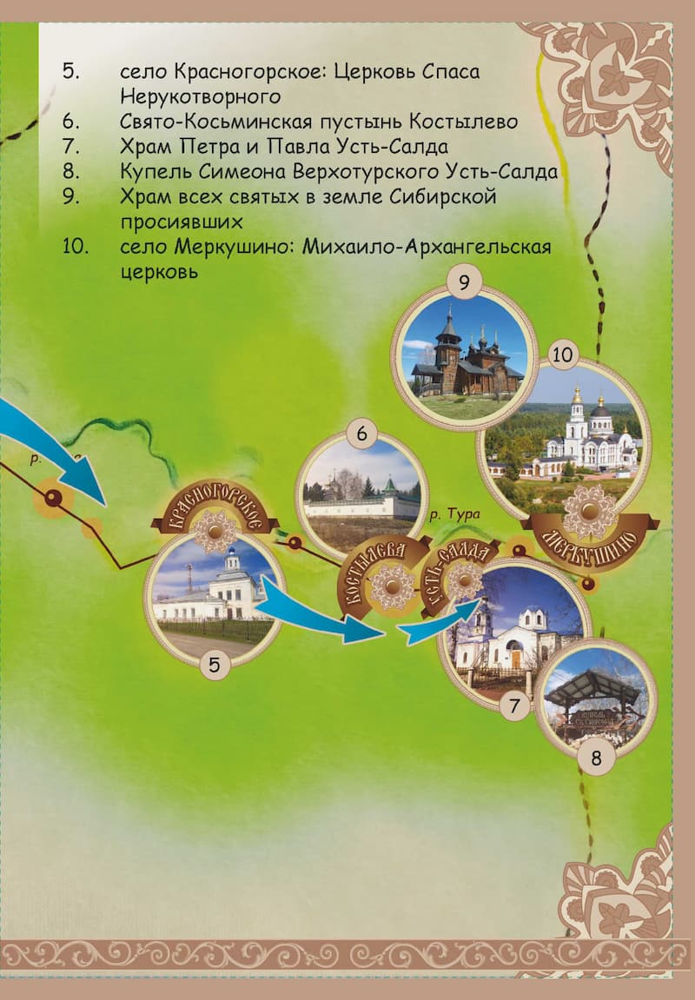
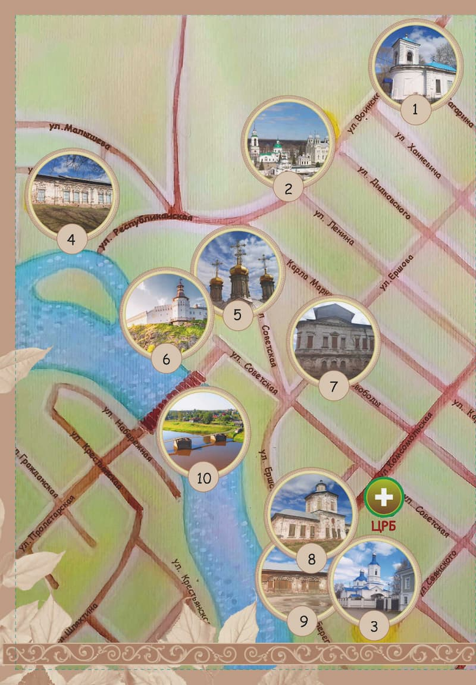
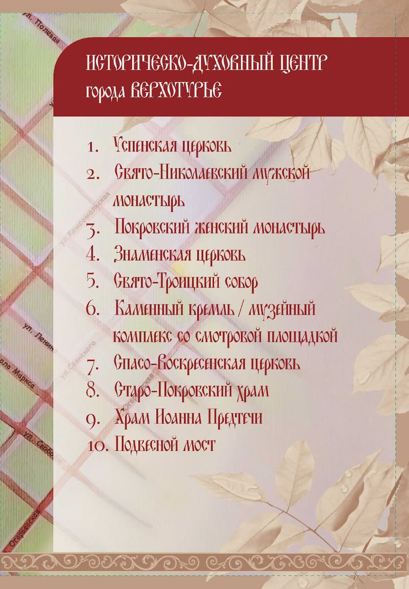

Верхотурье — один из старейших городов Урала, основанный в 1598 году. Город был заложен как острог на Бабиновской дороге — важнейшем пути, связывавшем Европейскую часть России с Сибирью. За свою историю город успел побывать и уездным центром, и местом политической ссылки, и духовным центром Урала.




Проживание: в городе есть несколько гостиниц и гостевых домов. Рекомендуется бронировать заранее в высокий сезон.
Питание: в городе работают кафе и рестораны с традиционной уральской кухней.
Лучшее время для посещения: лето и ранняя осень, когда погода наиболее благоприятна для экскурсий.
Верхотурье — это город, где история и духовность переплетаются в удивительном симбиозе. Здесь каждый камень дышит прошлым, а каждый храм хранит свои тайны. Путешествие в этот город станет незабываемым опытом для всех, кто интересуется историей и культурой России.